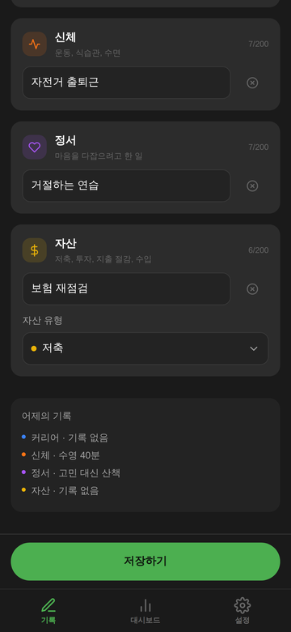
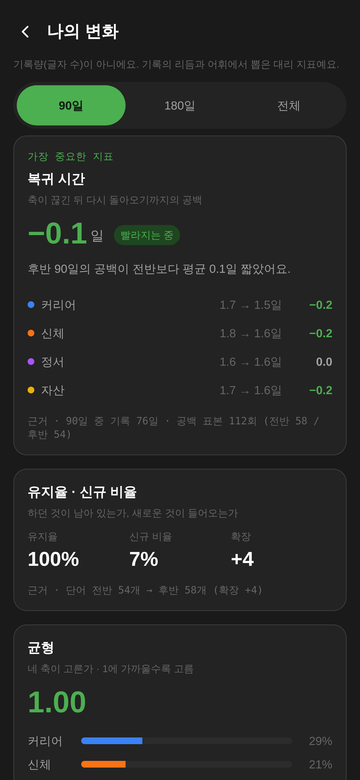

A PRODUCT BY VERSOVA
어제의 나
Yesterday’s Me
iOS · Android 출시 준비 중 / Preparing for release어제보다 무엇이 나아졌는지를 하루 한 줄로 적어요. 네 칸 중 한 칸만 적어도 저장돼요.
One line a day on what got better since yesterday. One box is enough to save.
기록은 기기 안에.
계정과 앱 서버 없이 동작해요. 앱이 기록을 서버로 보내지 않아요. 내보내기와 운영체제 기기 백업은 사용자가 선택한 앱과 휴대폰의 설정을 따라요.
No account or app server. The app does not send records to a server. Exports and operating-system backups follow your chosen app and phone settings.
네 가지 축으로.
커리어 · 신체 · 정서 · 자산의 기록을 돌아보고 대시보드에서 변화를 살펴봐요. 지표는 기록의 관찰이며 사람의 가치를 평가하지 않아요.
Reflect across career, body, mind and money. Metrics describe your records, not your worth.


지원 / Support
개인정보 처리방침 / Privacy policy · 도움말 / Help
문의 / Contact: versova1128@gmail.com